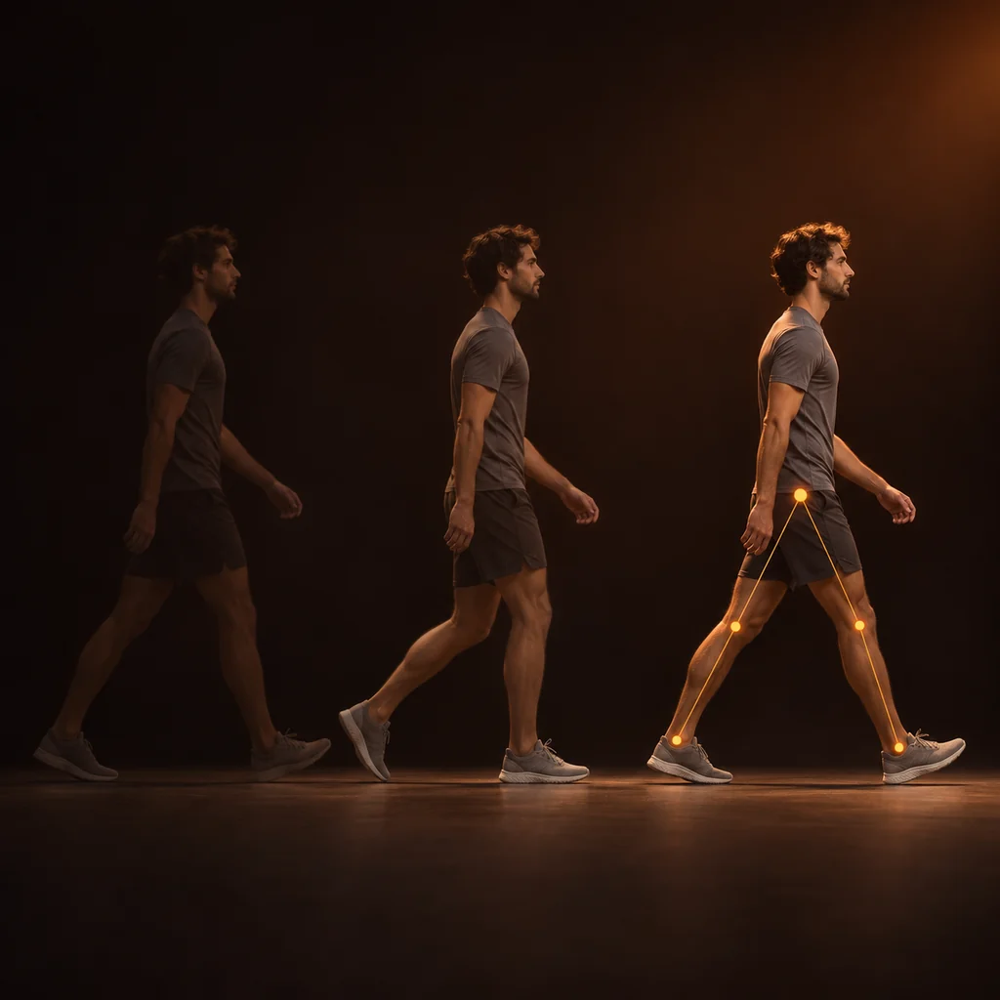

In development
3D pose estimation
Reconstruct a 3D skeleton from smartphone video to explore posture, joint angles, and how the body moves over time.
Early-stage platform · In development
We’re developing ScAit to reconstruct 3D pose and body shape using just a smartphone camera. Our research roadmap extends to body fat percentage, muscle percentage, and the forces acting on joints.

What we’re building
Our goal is to bring movement and body analysis to the smartphone camera. We’re building the platform around 3D pose and mesh reconstruction, while researching body composition and joint loading. The platform is at an early stage, and validating each estimate is part of the work ahead.
In development
Reconstruct a 3D skeleton from smartphone video to explore posture, joint angles, and how the body moves over time.
In development
Recreate the body’s surface as a 3D mesh from camera footage, providing a digital representation of body shape and movement.
Research roadmap
Investigate estimates of body fat percentage and muscle percentage from camera-based body shape models.
Research roadmap
Explore how reconstructed movement can support biomechanical estimates of the forces acting on joints, helping us study the stress they experience.
Research
The featured paper studies single-camera 3D pose estimation for gait assessment in people with spinal cord injury. It compares estimated movement with laboratory motion capture and provides context for our work on movement reconstruction.
Related research has also investigated smartphone images for body fat estimation. ScAit’s body composition and joint-loading features are research goals that require their own validation.
Read the smartphone body fat study by Farina et al., published in Sensors (2022).
npj Digital Medicine · 2026
Natraj, Messmer, Fujii et al.
Read the open access paperContact
For questions about ScAit, research, or collaboration, contact Adam Bahelka.